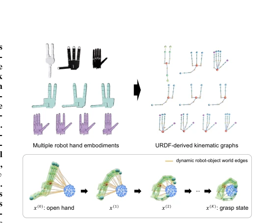
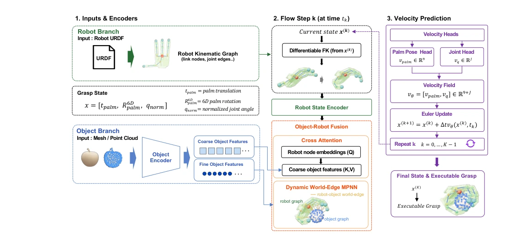
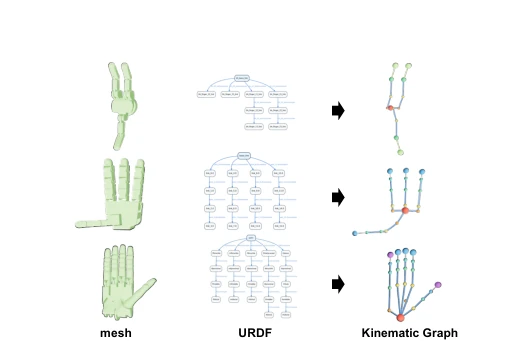
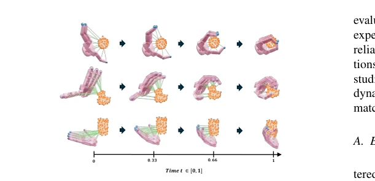
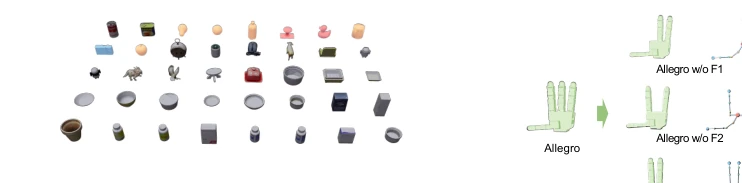
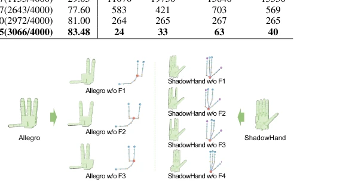
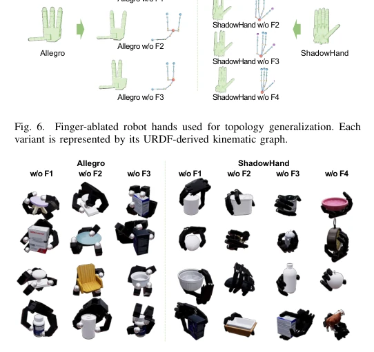
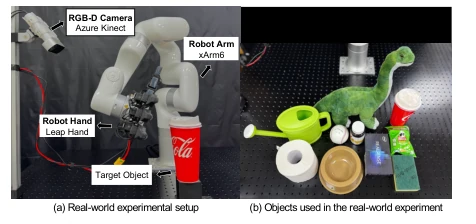

This paper attempts to solve the "Tower of Babel" problem in multi-robot hand grasping generation. The core selling point of GraspGraphNet is that it requires no post-optimization and directly outputs executable joint commands. It transforms the robotic hand into a graph and uses Flow Matching to generate a velocity field. Although claimed to be "topology-aware", it essentially still relies on URDF structures, and for completely unseen unconventional hand shapes, it may still require retraining. However, the 40ms inference speed is indeed much faster than competitors that still need to solve inverse kinematics, truly mastering the "end-to-end" concept. It is just unknown whether in the real physical world, sensor noise will cause that Dynamic World-Edge to collapse, after all, the gap between simulation and reality cannot be bridged solely by graph neural networks. High success rate does not imply stability in the physical world, this point is worth further observation. Additionally, it avoids the expensive contact graph optimization required by GenDexGrasp, directly eliminating intermediate steps, which is a huge advantage in real-time control.
The core pain point of dexterous grasping generation lies in the contradiction between "generality" and "executability". Existing methods such as GenDexGrasp [3] and DRO-Grasp [7] often predict contact points or interaction relations, these intermediate representations cannot directly drive the robot, must undergo inverse kinematics (IK) or optimization reconstruction, which not only increases inference latency but also easily leads to grasping failure due to kinematic constraints. TRO-Grasp [12], although introducing graph diffusion, still requires subsequent steps to recover joint configurations. The kinematic topologies of different robotic hands (such as number of phalanges, joint degrees of freedom) vary significantly, making it difficult for models to transfer across platforms. This paper aims to build a unified framework that directly generates executable Palm Pose and Joint Configuration, avoiding cumbersome post-processing, while adapting to different topological structures, achieving true cross-embodiment grasping. This solves the awkward situation in existing methods of "can grasp but cannot move".

Fig. 1. GraspGraphNet represents different dexterous hands as URDF-derived kinematic graphs and generates an executable grasp by evolving an open-hand state x(0) to a final grasp state x(K) with dynamic robot-object world edges.
The overall process is based on Conditional Flow Matching. First, the object point cloud is encoded into multi-level graph features, and the robotic hand URDF is converted into a kinematic graph with nodes as links and edges as joints. During the generation process, Differentiable FK is used to map the current joint state to the world coordinates of the links. The core innovation lies in the Dynamic World-Edge message passing mechanism, which dynamically constructs interaction edges with the nearest neighbor points of the object based on the current link position, rather than static connections. Global object context is fused through Cross-Attention, then robot node embeddings are updated via MPNN. Finally, Palm and Joint velocity heads predict the velocity field, state is iteratively updated through Euler integration, directly outputting executable commands. This design allows the model to handle graph structures of different sizes, adapting to topological changes such as missing fingers without retraining. Specifically, the model starts from an open hand state, gradually approaching the target grasp, updating interaction edges based on the current state at each step, ensuring the feasibility of the grasping path.

Fig. 2. Overview of GraspGraphNet. Given an object point cloud and a robot kinematic graph constructed from its URDF, GraspGraphNet generates an executable grasp by integrating a learned velocity field over the palm pose and joint state. At each flow step, differentiable forward kinematics computes the current world-space hand-link poses, and a kinematic-tree MPNN encodes the articulated robot state. The resulting robot node embeddings are fused with coarse and fine object features through cross-attention and dynamic world-edge message passing, respectively. Palm and joint velocity heads then predict the velocity field used to update the grasp state.

Fig. 3. URDF-derived robot hand representations. Physical links form graph nodes, and joints form directed parent-to-child edges.

Fig. 4. State-dependent grasp generation. The grasp state is iteratively refined from an open-hand initialization with state-dependent forward kinematics and dynamic world-edge updates.
实验Experiments
实验在 Isaac Gym 仿真及真实 Leap Hand 上进行。数据集包含 40 个未见物体（CMapDataset + Google Scanned Objects）。对比基线包括 GenDexGrasp [3]、DRO-Grasp [7] 和 TRO-Grasp [12]。GraspGraphNet 在 Barrett、Allegro 和 Shadow 手上平均成功率达 83.48%，显著优于竞品，且推理时间仅 40ms（竞品多为数百毫秒至上万毫秒）。在手指移除的拓扑变体测试中，无需重训即保持 72.70% 成功率，证明了对结构变化的鲁棒性。消融实验表明，动态世界边比静态边提升显著（83.48% vs 50.23%），Flow Matching 优于直接回归。真实世界测试在 10 个物体上达到 91% 成功率，验证了泛化能力。所有实验均在单张 RTX 4090 上完成，展示了高效的计算性能。
Experiments were conducted on Isaac Gym simulation and real Leap Hand. The dataset contains 40 unseen objects (CMapDataset + Google Scanned Objects). Comparison baselines include GenDexGrasp [3], DRO-Grasp [7], and TRO-Grasp [12]. GraspGraphNet achieved an average success rate of 83.48% on Barrett, Allegro, and Shadow hands, significantly outperforming competitors, and inference time was only 40ms (competitors mostly hundreds of milliseconds to tens of thousands of milliseconds). In topology variant tests with finger removal, it maintained a 72.70% success rate without retraining, proving robustness to structural changes. Ablation experiments show that Dynamic World-Edge improved significantly over static edges (83.48% vs 50.23%), and Flow Matching outperformed direct regression. Real-world tests achieved 91% success rate on 10 objects, verifying generalization capability. All experiments were completed on a single RTX 4090, demonstrating efficient computational performance.

Fig. 5. Evaluation object set used in simulation. The set contains 40 unseen objects, including 10 held-out CMapDataset objects and 30 objects from Google Scanned Objects.

Fig. 6. Finger-ablated robot hands used for topology generalization. Each variant is represented by its URDF-derived kinematic graph.

Fig. 7. Qualitative grasp results on topology-modified robot hands.

Fig. 8. Real-world experimental setup and test objects. (a) Experimental setup with the RGB-D camera, xArm6 robot arm, and Leap Hand. (b) Objects used in the real-world experiments.